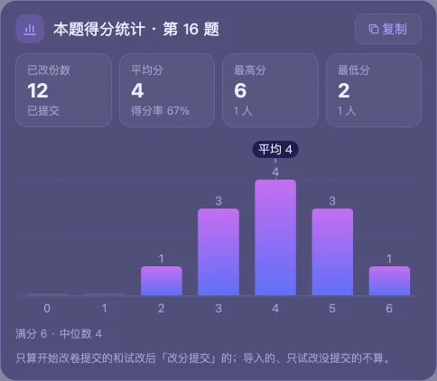

能做什么
软件一份一份地改：截图 → AI 评分 → 填分提交 → 等网页换到下一份，改够你设的份数就停。
截图评分
截下红框里学生的作答，连同你写的评分细则发给 AI（默认 DeepSeek）。AI 认出学生写的字，按细则逐个得分点打分并写出理由。
一评二评
同一份默认评两次再合成一个分数，合成方式可选平均、中位、最低、最高。
替你填分、提交
模拟鼠标键盘，点网页上的分数框、输入分数、点提交按钮；也可以设成只填分、你自己提交。
拿不准就停
网页没换页、评分时页面变了、AI 出错，都会停下或重改这一份，并说明原因。
标出需复核
两轮分数差得多、认出的字不一样、AI 引用的话对不上，就标黄「需复核」，改完集中到「复核与异常」里看。
先试改，再开始
「试改一份」只填分不提交，看 AI 认的字和理由对不对；典型作答可以一键收进打分示例，后面的评分会参考。
记录与统计
每一份的截图、分数、各轮评析都留在本机，可筛选、导出 Excel；本题得分统计有平均分、最高最低分和分数分布图。
断点续改
中途停下没关系，「已改数量」记着份数，下次接着改。改卷时可以收成一个置顶小窗。
适用场景
阅卷网页上的主观题，比如语文的诗歌鉴赏、简答题。目前在智学网上使用和测试过，其他阅卷平台还没有验证。
软件界面
截图用的是演示数据（「示例考试」），不含真实学生的作答。点图片看大图。



使用流程
第一次打开有新手引导，一步步带你做完。完整说明见软件里的「使用帮助 → 打开使用手册」。
- 连接 AI
选服务商（默认 DeepSeek），粘贴自己的 API Key，点「测试连接」。Key 保存在系统的密码管理里，不写进文件。
- 设置试卷
新建题目，填年级、学科、满分、打分步长、分数框个数，以及本次要改几份。
- 框选区域
打开阅卷网页，把红框拖到学生作答上、绿框拖到分数框上、蓝框拖到提交按钮上。
- 评分规则
粘贴题目材料和评分细则，可加打分示例和参考图；「检查规则」会找出前后矛盾、说得含糊的地方，「优化评分细则」再据此起草一份细则，你核对后才采用。
- 试改一份
只改当前这一份，分数填进网页但不提交。看 AI 认的字、理由和得分点对不对，不满意就改细则。
- 改分提交
在「老师定分」里改成你认为对的分数，点「改分提交」，网页换到下一份。
- 开始改卷
点「开始改卷」或按快捷键，软件一份一份地改，改够份数自己停，并弹出这一批的小结。
改卷时别动鼠标键盘、别切换窗口：软件在模拟鼠标键盘。要停就按快捷键（Mac 默认 ⌃⌥Q，Windows 默认 Alt+Q）。
安装
从下方「下载」拿到安装包后这样安装，不需要另装 Python 或其他工具。
Mac
解压 AI-Grader-v0.1.2-macOS-arm64.zip，把得到的 AI改卷.app 拖进「应用程序」，双击打开。
试用版还没有经过 Apple 公证，第一次打开会被系统拦住：到「系统设置 → 隐私与安全性」，在下方找到 AI改卷，点「仍要打开」。
Windows
解压 AI-Grader-v0.1.2-Windows-x64-Setup.exe.zip，双击里面的 AI-Grader-v0.1.2-Windows-x64-Setup.exe，按「下一步」装好，桌面上会有图标。不需要管理员权限。
第一次运行如果弹出「Windows 已保护你的电脑」，点「更多信息 → 仍要运行」。卸载不会删掉设置和改卷记录。
Mac 需要三项权限
在「系统设置 → 隐私与安全性」里，给「AI改卷」打开下面三项，然后完全退出 AI改卷（⌘Q）再重新打开，权限才生效。
| 权限 | 用来做什么 |
|---|---|
| 屏幕录制 | 截学生的作答 |
| 辅助功能 | 点分数框、输入分数、点提交 |
| 输入监控 | 全局快捷键（第一次按快捷键时系统会问） |
系统支持
| macOS | Apple 芯片（M 系列）的 Mac，macOS 14 或更新版本。 |
|---|---|
| Windows | 64 位 Windows 10（1809 或更新）和 Windows 11，已在 Windows 真机上测试（含显示缩放）。 |
| AI 服务 | 需要联网，并自备一家大模型服务商的 API Key（默认 DeepSeek），模型要能识图。调用费用由你在服务商那里支付。支持的服务商：DeepSeek、通义千问、字节豆包、智谱、月之暗面 Kimi、MiniMax、小米 MiMo、OpenAI、Gemini、Claude，也可以填中转平台的地址。 |
| 阅卷网页 | 浏览器缩放保持 100%，不要全屏；改卷时网页所在的屏幕上不能有别的窗口挡住红框。 |
版本与更新日志
当前是试用版 v0.1.2。前面是试用版的更新，后面是试用之前的开发记录。
- · v0.1.2 试用版
- 评分规则支持公式和表格：编辑框可以切到「预览」看排好版的公式和表格；从网页、Word、Excel 粘贴的表格自动变成表格；「符号」面板插常用符号和公式模板
- 截图识别：框选屏幕上 PDF、Word 里的标准答案和细则，AI 转成带公式、表格的文字，核对后插入（要用能识图的模型）
- 各学科都能用：评分时按学科补充阅卷规矩（理科步骤分、等价答案、单位、有效数字；英语；史地政）；「检查规则」会重算标准答案、查公式写法；「优化评分细则」保留公式，理科按步骤列分
- 改卷详情、改卷小窗和改卷记录里，公式也排好版显示；学生作答和理由里的换行照原样显示
- 题型加了证明题、实验题、作图题、推断题、书面表达、翻译
- · v0.1.1 试用版
- Windows 改成安装程序：双击 Setup.exe，按「下一步」就装好，桌面有图标；不需要管理员权限；卸载不删设置和改卷记录
- · v0.1.0 试用版
- 第一个试用安装包：Apple 芯片 Mac 和 64 位 Windows
-
- 评分规则页新增「优化评分细则」：结合「检查规则」找出的问题起草细则，老师核对后才采用
- 新增本题得分统计：平均分、最高最低分、分数分布图
- 打分步长支持 0.25 分
- 改过卷的题参数自动锁住，防止误改
- 改卷时工作台保持显示，停在改卷详情
-
- Windows 真机测试通过，支持显示缩放下的截图和点击
-
- 「AI 评分过程」边写边显示
- 新增新手引导和使用手册（可导出 PDF）
- AI 配置：服务商图标、一键粘贴 Key、去官网申请 Key
-
- 识别核对：两轮认出的作答对不上、看不清、引用对不上时标「需复核」
- 试改一份、收进打分示例（高 中 低 正 错）
- 改卷小窗下方显示改卷详情
-
- 界面调整：通栏顶栏、侧栏可以换到右边
- 提交后核对网页是否换页，模型接口出错时停下并说明原因
-
- 图形界面：工作台 + 改卷小窗、三个标记框
-
- 开始开发：模型接入、多评合成、导出 Excel
下载
试用版 v0.1.2。安装包放在蓝奏云，点按钮直接到下载页，不用登录、不用输密码。本站不托管安装包。
下载步骤
- 点上面对应系统的按钮，打开蓝奏云的下载页，点最新版本的文件。
- 在下载页上点「下载」，浏览器开始下载 zip。
- 按上面的「安装」步骤解压、安装。
免费版：软件提供免费版，下载后可以直接试用。
本站不提供购买、注册或登录。
想核对安装包是否完整？（SHA256）
下载后算一下文件的 SHA256，和下面的值一致就说明文件完整、没被改过。Windows 先解压，核对里面的 Setup.exe。
Mac 在「终端」里运行：
shasum -a 256 ~/Downloads/AI-Grader-v0.1.2-macOS-arm64.zipWindows 在「命令提示符」里运行（换成文件实际所在的位置）：
certutil -hashfile "%USERPROFILE%\Downloads\AI-Grader-v0.1.2-Windows-x64-Setup.exe" SHA256隐私与使用须知
- 截图只存在你自己的电脑上；只有红框里的作答会发给你选的 AI 服务商。不要把学生姓名框进红框。
- API Key 保存在系统的密码管理里（Mac 钥匙串、Windows 凭据管理器），不写进文件。
- AI 给的分数仅供参考，需要老师复核；标「需复核」的请到阅卷网页的回评里核对。删掉软件里的记录不会改动已经提交到网页上的分数。
- 请遵守学校和阅卷平台关于使用辅助工具的规定。
常见问题
试改以后网页没换到下一份？
正常。试改只填分、不提交。在「改卷详情」点「改分提交」，或者自己在网页上提交，再试改下一份。
截到空白页、AI 说作答是空的？
网页还没加载完就截了。到「答题卡设置」把「换页等待」调大（2 秒左右）。
改了几份就停下，说「平台没有换到下一份」？
网页卡住了，或者已经没卷子了。看一眼网页；没问题的话检查蓝框是不是正好在提交按钮上。
AI 出错：余额不足 / 402？
到服务商官网充值。改卷会停下，已经改好的都保存了，充好值接着点开始改卷。
快捷键没反应？
Mac 要给 AI改卷「输入监控」权限，给完要完全退出 AI改卷 再打开。快捷键可以在软件的「系统设置 → 快捷键」里改。
数据存在哪里？换电脑怎么办？
Mac 在 ~/Library/Application Support/AI改卷/（记录、截图、设置），换电脑时把这个文件夹拷过去就行；API Key 在系统钥匙串里，要重新粘贴。Windows 在 %LOCALAPPDATA%\AI改卷\（一般是 C:\Users\用户名\AppData\Local\AI改卷\），同样整个拷过去；API Key 在 Windows 凭据管理器里，也要重新粘贴。
联系方式
问题反馈与建议：微信 xiongmaker